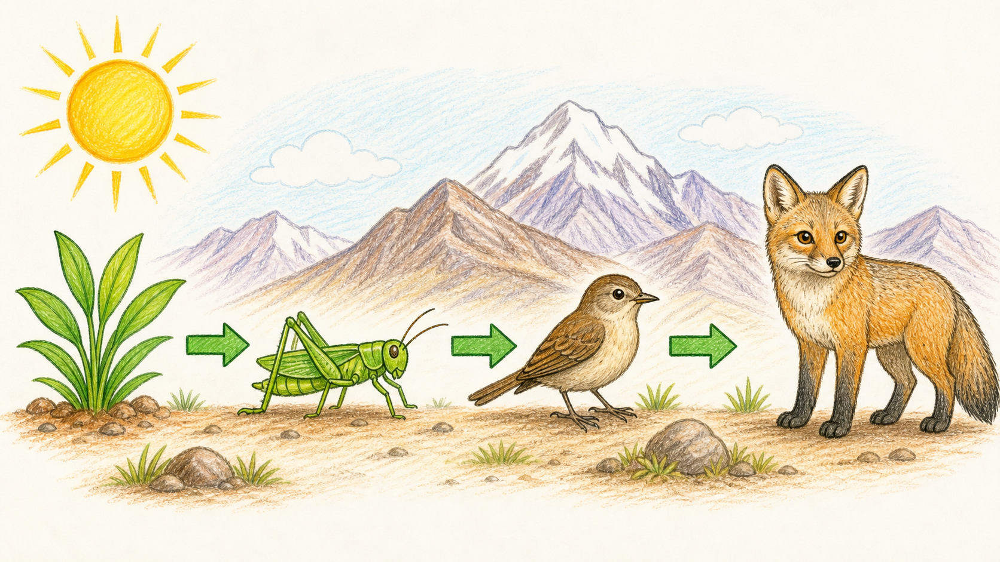
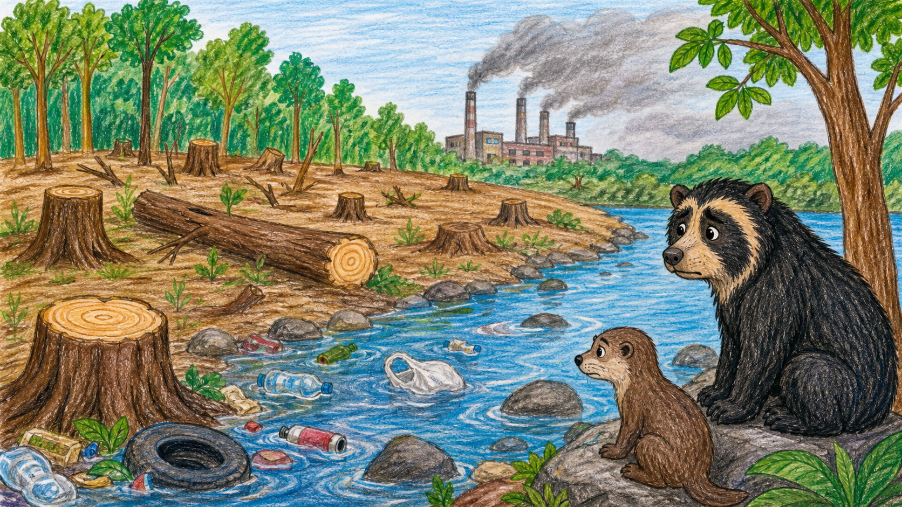
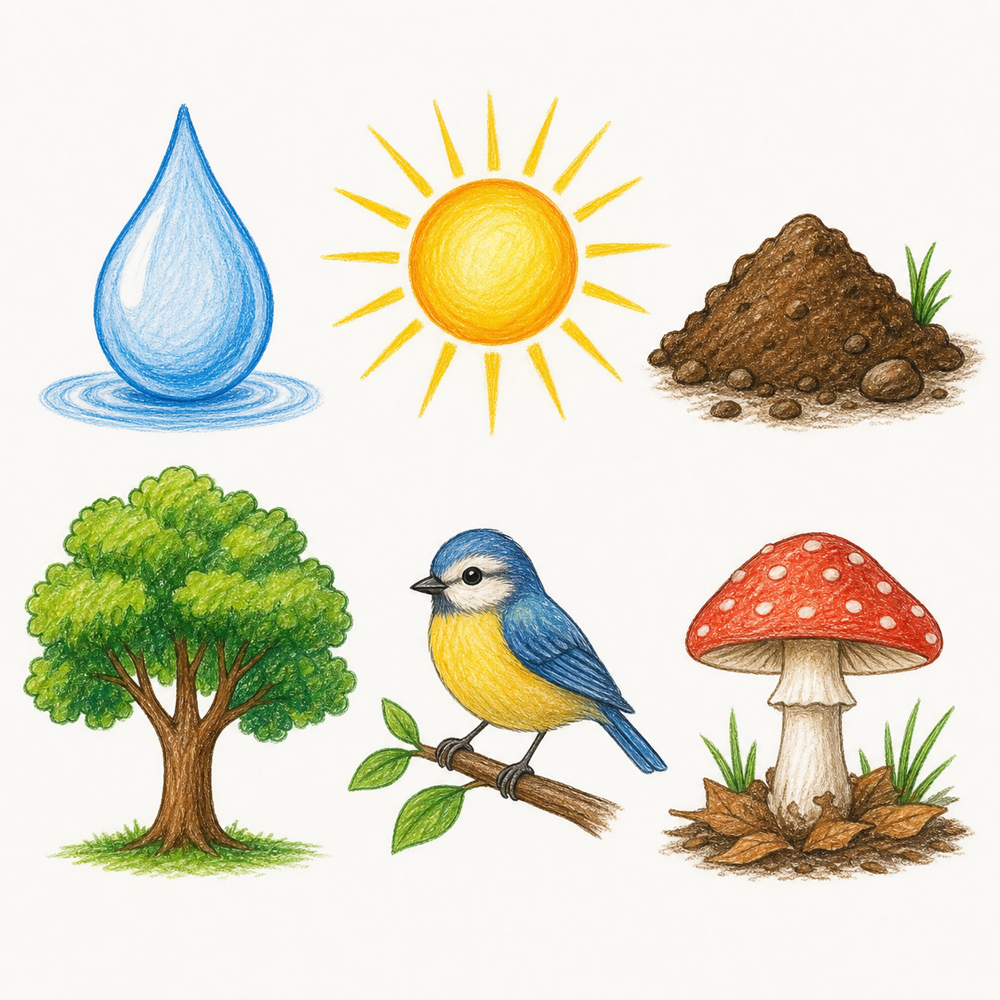
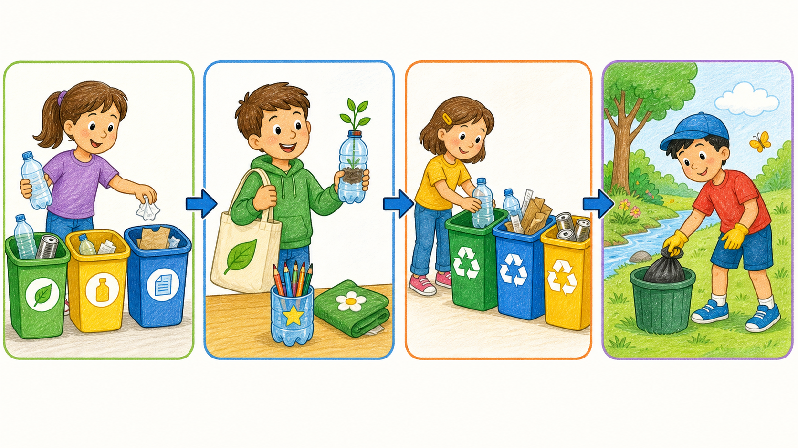

Imagen 1 · Cadena alimenticia
Sirve para las preguntas de ordenamiento e interpretación de flechas.
Imágenes públicas para Google Forms y script listo para generar el examen de Sexto de Primaria sobre ecosistemas y biodiversidad.

Sirve para las preguntas de ordenamiento e interpretación de flechas.

Sirve para la pregunta interpretativa sobre deforestación y contaminación.

Sirve para clasificar seres vivos y elementos no vivos del ecosistema.

Sirve para la pregunta visual sobre separar, reutilizar, reciclar y cuidar el lugar.
script.google.com con tu cuenta.buildSixthGradeU4Exam.